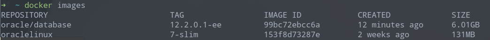

虽然之前上过 oracle 数据库相关的课程，但学得比较浅，上完课后也没怎么使用到 oracle 数据库，一般都使用 mysql、mariadb 等。
最近因为工作需要，不得不重新认真学学 Oracle 数据库了「重复学习真的很浪费时间😓」，而首先需要考虑的就是如何安装一个 oracle 数据库了，之前已有在 windows 系统下直接安装 oracle 数据库的经验。
理论上，再在 win10 上安装一个 oracle 数据库很简单，但我平时主要使用笔记本电脑上的 manjaro 系统，其他的系统只是备用而已。
自从用了 Docker 之后，平时自己在学习或开发，遇到需要在本机上搭建相关环境时，就会很自然地想到能不能使用 Docker 容器来处理呢！
主要是想让搭建的开发环境与系统环境隔离，我们只在需要使用时才启动相关的容器。当我们不需要使用到该已搭建的环境时，也方便清理！
既然已经决定要使用 Docker 来安装并运行 oracle 数据库，那么我们应该首先看看官方有没有提供相应的镜像，如果有的话，我们便可以直接 pull 下来，然后运行即可。没有，我们也可从基础镜像开始配置，如从 oracle-linux 开始，一层一层去配置我们需要的镜像。
好在通过 google 直接搜 「run oracle database using docker」，便有了相关的资源。
我选择了 oracle 在 github 上提供的 docker-image 库。他们也提供了相应的 README.md ，给出了如何构建及运行 oracle 镜像的说明。
接下来，我将以 Oracle Database 12c Release 1 (12.1.0.2) Enterprise Edition and Standard Edition 2 为例，简单介绍该镜像的构建及运行使用。
将 docker-image 库下 OracleDatabase 目录下的所有文件下载下来后，在构建相应版本数据库之前，我们还需要从 Oracle Technology Network 上下载需要构建数据库版本相应的 linux x86 二进制安装包，放到 OracleDatabase/SingleInstance/dockerfiles/<version> 目录中。
接着，只需要执行 buildDockerImage.sh 即可。
1 2 3 4 5 6 7 8 9 10 11 12 13 14 15 16 17 18 19 [oracle@localhost dockerfiles]$ ./buildDockerImage.sh -h Usage: buildDockerImage.sh -v [version] [-e | -s | -x] [-i] [-o] [Docker build option] Builds a Docker Image for Oracle Database. Parameters: -v: version to build Choose one of: 11.2.0.2 12.1.0.2 12.2.0.1 18.3.0 18.4.0 19.3.0 -e: creates image based on 'Enterprise Edition' -s: creates image based on 'Standard Edition 2' -x: creates image based on 'Express Edition' -i: ignores the MD5 checksums -o: passes on Docker build option * select one edition only: -e, -s, or -x LICENSE UPL 1.0 Copyright (c) 2014-2019 Oracle and/or its affiliates. All rights reserved.
因为我们要构建 12.1.0.2 企业版数据库，因此执行 ./buildDockerImage.sh -v 12.1.0.2 -e。
需要注意的，完成该构建镜像过程后，只是生成安装了 Oracle 二进制文件的镜像。在容器第一次启动时，才会创建一个新的数据库实例，当数据库准备好可以使用时，会打印以下几行提示：
1 2 3 ######################### DATABASE IS READY TO USE! #########################
以上是我们使用官方提供的 Dockerfile 来构建的镜像的例子，当然我们也可以使用我们编写的 Dockerfile 来扩展镜像，如创建用户和表空间等。
官方提供的 Dockerfile 使用 oracle-linux 作为镜像基础层。
数据库的字符集编码会在镜像构建过程中进行配置。11g Express Edition 仅支持 UTF-8，标准版 2 和企业版可以在我们第一次运行容器时进行配置，可为不同表空间配置不同的字符集。
我们知道，docker 在构建镜像时，会将所有需要使用到的文件打包传送到构建上下文 (build context) 中，交由 dockerd 服务器来执行构建。
因此，我们应该尽量让构建上下文只包含我们需要的文件，必要时请使用 .dokerignore 文件，来忽略构建镜像时不需要用到的文件。
镜像的构建过程可能需要花费点时间。以我为例，我选择的数据库版本下载下来的安装包大概 4G 左右，然后构建镜像需要 22 步（22 层），花了将近一个小时吧。
镜像的构建过程大概如下（仅列出关键步）：
1 2 3 4 5 6 7 8 9 10 11 12 13 14 15 16 17 18 19 20 21 22 23 24 25 26 27 28 29 30 31 32 33 34 35 36 37 38 39 40 41 42 ... Building image 'oracle/database:12.2.0.1-ee' ... Sending build context to Docker daemon 3.454GB Step 1/22 : FROM oraclelinux:7-slim as base ... Step 2/22 : LABEL "provider"="Oracle" "issues"="https://github.com/oracle/docker-images/issues" "volume.data"="/opt/oracle/oradata" "volume.setup.location1"="/opt/oracle/scripts/setup" "volume.setup.location2"="/docker-entrypoint-initdb.d/setup" "volume.startup.location1"="/opt/oracle/scripts/startup" "volume.startup.location2"="/docker-entrypoint-initdb.d/startup" "port.listener"="1521" "port.oemexpress"="5500" ... Step 3/22 : ENV ORACLE_BASE=/opt/oracle ORACLE_HOME=/opt/oracle/product/12.2.0.1/dbhome_1 INSTALL_DIR=/opt/install INSTALL_FILE_1="linuxx64_12201_database.zip" INSTALL_RSP="db_inst.rsp" CONFIG_RSP="dbca.rsp.tmpl" PWD_FILE="setPassword.sh" RUN_FILE="runOracle.sh" START_FILE="startDB.sh" CREATE_DB_FILE="createDB.sh" SETUP_LINUX_FILE="setupLinuxEnv.sh" CHECK_SPACE_FILE="checkSpace.sh" CHECK_DB_FILE="checkDBStatus.sh" USER_SCRIPTS_FILE="runUserScripts.sh" INSTALL_DB_BINARIES_FILE="installDBBinaries.sh" ... Step 4/22 : ENV PATH=$ORACLE_HOME/bin:$ORACLE_HOME/OPatch/:/usr/sbin:$PATH LD_LIBRARY_PATH=$ORACLE_HOME/lib:/usr/lib CLASSPATH=$ORACLE_HOME/jlib:$ORACLE_HOME/rdbms/jlib ... Step 5/22 : COPY $SETUP_LINUX_FILE $CHECK_SPACE_FILE $INSTALL_DIR/ ... Step 6/22 : COPY $RUN_FILE $START_FILE $CREATE_DB_FILE $CONFIG_RSP $PWD_FILE $CHECK_DB_FILE $USER_SCRIPTS_FILE $ORACLE_BASE/ ... Step 7/22 : RUN chmod ug+x $INSTALL_DIR/*.sh && sync && $INSTALL_DIR/$CHECK_SPACE_FILE && $INSTALL_DIR/$SETUP_LINUX_FILE && rm -rf $INSTALL_DIR ... Step 8/22 : FROM base AS builder ... Step 9/22 : ARG DB_EDITION ... Step 10/22 : RUN yum -y install unzip ... Step 11/22 : COPY --chown=oracle:dba $INSTALL_FILE_1 $INSTALL_RSP $INSTALL_DB_BINARIES_FILE $INSTALL_DIR/ ... Step 12/22 : USER oracle ... Step 13/22 : RUN chmod ug+x $INSTALL_DIR/*.sh && sync && $INSTALL_DIR/$INSTALL_DB_BINARIES_FILE $DB_EDITION ... Step 14/22 : FROM base ... Step 15/22 : USER oracle ... Step 16/22 : COPY --chown=oracle:dba --from=builder $ORACLE_BASE $ORACLE_BASE ... Step 17/22 : USER root ... Step 18/22 : RUN $ORACLE_BASE/oraInventory/orainstRoot.sh && $ORACLE_HOME/root.sh ... Step 19/22 : USER oracle ...
构建完成后，我们使用 docker images 来查看相关的镜像。

由于我们构建的 oracle 数据库是企业版 2，因此容器运行主要参考如下：
1 2 3 4 5 6 7 8 9 10 11 12 13 14 15 16 17 18 19 20 21 22 23 24 25 26 27 28 docker run --name <container name> \ -p <host port>:1521 -p <host port>:5500 \ -e ORACLE_SID=<your SID> \ -e ORACLE_PDB=<your PDB name> \ -e ORACLE_PWD=<your database passwords> \ -e ORACLE_CHARACTERSET=<your character set> \ -v [<host mount point>:]/opt/oracle/oradata \ oracle/database:19.3.0-ee Parameters: --name: The name of the container (default: auto generated) -p: The port mapping of the host port to the container port. Two ports are exposed: 1521 (Oracle Listener), 5500 (OEM Express) -e ORACLE_SID: The Oracle Database SID that should be used (default: ORCLCDB) -e ORACLE_PDB: The Oracle Database PDB name that should be used (default: ORCLPDB1) -e ORACLE_PWD: The Oracle Database SYS, SYSTEM and PDB_ADMIN password (default: auto generated) -e ORACLE_CHARACTERSET: The character set to use when creating the database (default: AL32UTF8) -v /opt/oracle/oradata The data volume to use for the database. Has to be writable by the Unix "oracle" (uid: 54321) user inside the container! If omitted the database will not be persisted over container recreation. -v /opt/oracle/scripts/startup | /docker-entrypoint-initdb.d/startup Optional: A volume with custom scripts to be run after database startup. For further details see the "Running scripts after setup and on startup" section below. -v /opt/oracle/scripts/setup | /docker-entrypoint-initdb.d/setup Optional: A volume with custom scripts to be run after database setup. For further details see the "Running scripts after setup and on startup" section below.
例如:
1 2 3 4 5 6 7 8 docker run --name dev-oracle-database \ -p 1521:1521 -p 5500:5500 \ -e ORACLE_SID=ORCLCDB \ -e ORACLE_PDB=ORCLPDB1 \ -e ORACLE_PWD=<your password> \ -e ORACLE_CHARACTERSET=UTF-8 \ -v ./docker-volumes/dev-oracle-database/oradata:/opt/oracle/oradata \ -d oracle/database:12.2.0.1-ee
在容器启动后及数据库创建完成后，我们可以通过以下方式连接数据库：
如果本机系统上没有 oracle 数据库的客户端，我们可以直接 docker exec -it <container_id> or <container_name> bash 进入容器，之后再使用容器中提供的 sqlplus 去连接数据库。
oracle-linux 系统中肯定是有相应的工具的。
当然啦，当本机上有 Oracle 数据库客户端后，就可以用我们熟悉的方式去连接数据库了。
1 2 3 sqlplus sys/<your password>@//localhost:1521/<your SID> as sysdba sqlplus system/<your password>@//localhost:1521/<your SID> sqlplus pdbadmin/<your password>@//localhost:1521/<Your PDB name>
该 oracle 数据库容器还配置了 OEM (Oracle Enterprise Manager) Express ,我们可以通过浏览器打开以下 URL 来访问:
1 https://localhost:5500/em/
Oracle 数据库容器可以通过使用 O_DIRECT 标志来绕过一些文件的文件系统缓存。但不建议在不支持 O_DIRECT 标志的文件系统上运行容器。
修改 admin 账号的密码
如果第一次启动容器时没有指定密码的话，则会生成随机密码。我们可以在输出日志中的以下行，找到这些账号的密码：
1 ORACLE PASSWORD FOR SYS, SYSTEM AND PDBADMIN:
要修改这些账号的密码，我们可以通过 docker exec 去执行容器中的 setPassword.sh 脚本：
1 docker exec <container name> ./setPassword.sh <your password>
其他版本的数据库的容器的运行与上面提到的企业版和标准版 2 有点不一样，具体可以参考README.md 文件。
本文主要简单介绍了，如何使用 oracle 提供的 docker-image 库构建自己想要的 oracle 数据库镜像，然后运行并使用已构建的镜像。
实际上，除了使用 oracle 提供的 docker-image 库自己构建相应的镜像外（能使用提供的 Dockerfile 进行自定义），我们也能直接通过类似 docker pull store/oracle/database-enterprise:12.2.0.1-slim 命令直接从官方库上下相应的镜像。
References
https://github.com/oracle/docker-images/tree/master/OracleDatabase/SingleInstance https://dzone.com/articles/oracle-12c-image-installation-in-docker